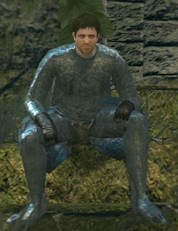
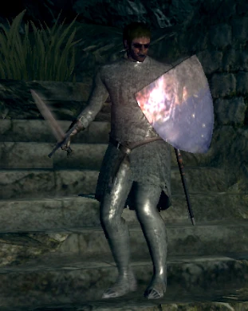

Well, what do we have here?
You must be a new arrival. Let me guess. Fate of the Undead, right? Well, you're not the first. But there's no salvation here. You'd have done better to rot in the Undead Asylum... But, too late now. Well, since you're here... Let me help you out. There are actually two Bells of Awakening. One's up above, in the Undead Church. The other is far, far below, in the ruins at the base of Blighttown. Ring them both, and something happens... Brilliant, right? Not much to go on, but I have a feeling that won't stop you. So, off you go. It is why you came, isn't it? To this accursed land of the Undead? Hah hah hah hah...
Fisting is {{ fistingPrice | currency: 'CAD' : 'symbol-narrow' : '1.0-0'}}{{ enjoyersFraction | percent }} of Undead enjoy it!

